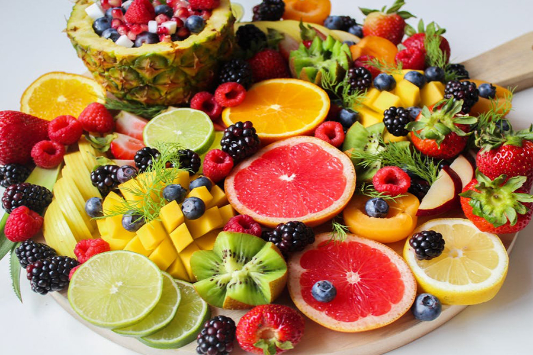

農村體驗
客製蔬果箱
蔬果知識小遊戲
關於我們
問與答
新鮮蔬果
聯絡我們
立即買

水果介紹
生產過程特點
採用對環境友善的栽培方式種植，栽培過程不使用農藥，並搭配AI智慧監控技術，
有效控制環境含氮量、溫度、病蟲害防治，提高生產力。
生產流程介紹
1.苗木
2.種植行株距
3.施肥
4.整枝
5.開花
6.結果
7.採收
水果產期表
月份
1
2
3
4
5
6
7
8
9
10
11
12
草莓
芒果
柳丁
小番茄
香蕉
芭樂
檸檬
柿子
品種介紹
生產的農產品